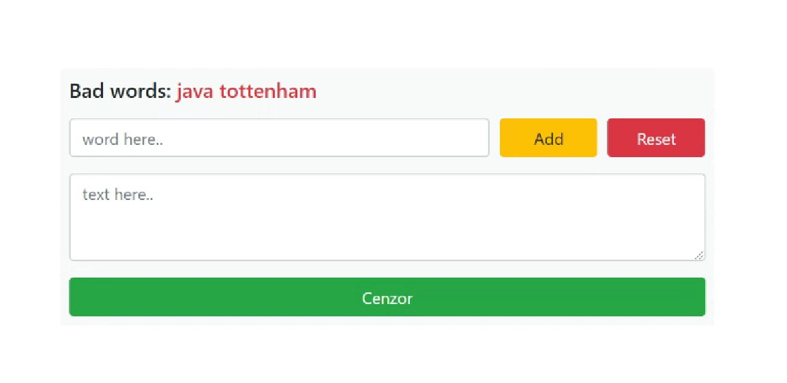
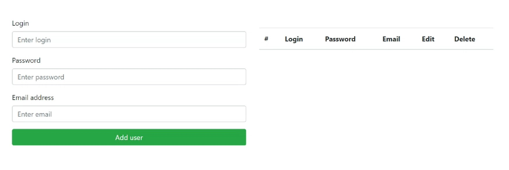

<main>
   <div class="task">
        <div class="task-cenzor tasks">
            
            <a [routerLink]="['/works/cenzor']">Angular cenzor</a>
        </div>
        <div class="task-user tasks">
            
            <a [routerLink]="['/works/user-list']">Angular user list</a>
        </div>
        <div class="task-list tasks">
            
            <a [routerLink]="['/works/task-list']">Angular task list</a>
        </div>
   </div>
</main>
